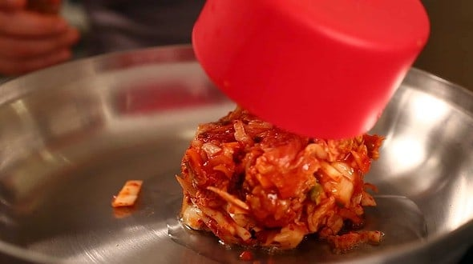

INGREDIENTS
- 3 bowls steamed rice
- 1 cup chopped kimchi
- 1/4 cup kimchi juice
- 1/4 cup water
- 2-3 tbsp gochujang
- 3 tsp toasted sesame oil
- 1 tbsp roasted sesame seeds
- 1 green onion chopped
- 1 sheet of roasted seaweed
DIRECTIONS
- Heat up a wide, flat pan, or skillet. Add the vege oil.
- Add the kimchi and stir fry for 1 minute over med-high heat.

- Add rice, kimchi juice, water ,and gochujang. Stir all together for 7 minutes.
- Add sesame oil and remove from heat.
- Garnish with spinkled chopped green onion, roasted seaweed, and sesame seeds. Serve right away.
Return to top
Return to main page